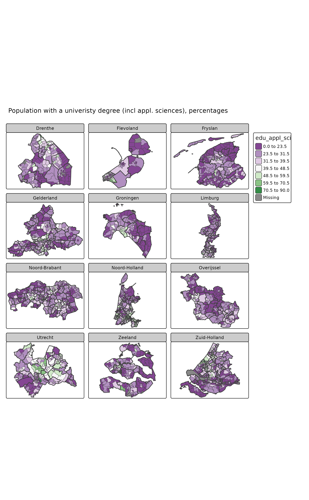
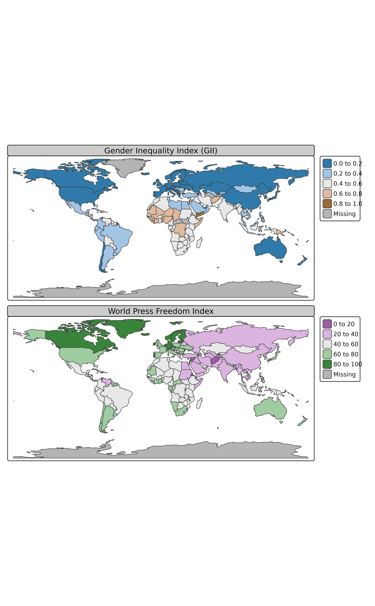
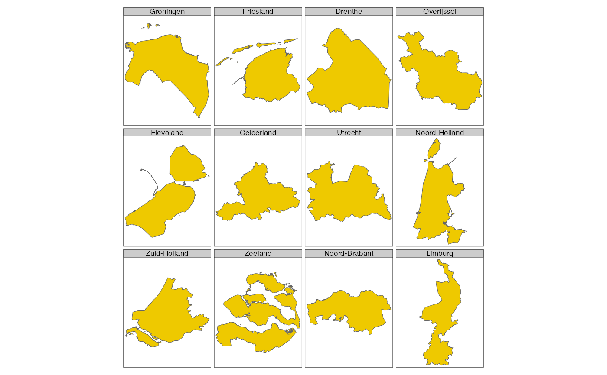
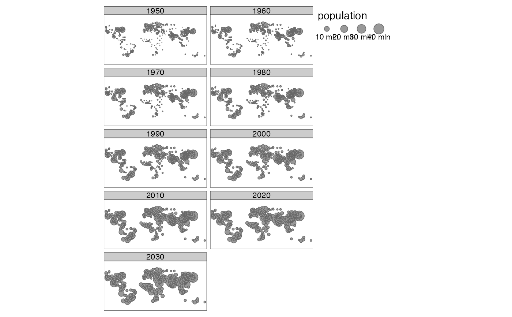

Creates a tmap-element that specifies facets (small multiples). Small multiples can be created in two ways: 1) by specifying the by argument with one or two variable names, by which the data is grouped, 2) by specifying multiple variable names in any of the aesthetic argument of the layer functions (for instance, the argument col in tm_fill). This function further specifies the facets, for instance number of rows and columns, and whether the coordinate and scales are fixed or free (i.e. independent of each other). An overview of the different approaches to create facets is provided in the examples.
tm_facets(
by = NULL,
along = NULL,
as.layers = FALSE,
ncol = NA,
nrow = NA,
free.coords = !as.layers,
drop.units = TRUE,
drop.empty.facets = TRUE,
drop.NA.facets = FALSE,
sync = NA,
showNA = NA,
textNA = "Missing",
free.scales = NULL,
free.scales.fill = NULL,
free.scales.symbol.size = NULL,
free.scales.symbol.col = NULL,
free.scales.symbol.shape = NULL,
free.scales.text.size = NULL,
free.scales.text.col = NULL,
free.scales.line.col = NULL,
free.scales.line.lwd = NULL,
free.scales.raster = NULL,
inside.original.bbox = FALSE,
scale.factor = 2,
drop.shapes = drop.units
)data variable name by which the data is split, or a vector of two variable names to split the data by two variables (where the first is used for the rows and the second for the columns).
data variable name by which the data is split and plotted on separate pages. This is especially useful for animations made with tmap_animation. The along argument can be used in combination with the by argument. It is only supported in "plot" mode (so not in "view" mode).
logical that determines whether facets are shown as different layers in "view" mode. By default FALSE, i.e. facets are drawn as small multiples.
number of columns of the small multiples grid. Not applicable if by contains two variable names.
number of rows of the small multiples grid. Not applicable if by contains two variable names.
logical. If the by argument is specified, should each map has its own coordinate ranges? By default TRUE, unless facets are shown in as different layers (as.layers = TRUE)
logical. If the by argument is specified, should non-selected spatial units be dropped? If FALSE, they are plotted where mapped aesthetics are regarded as missing values. Not applicable for raster shapes. By default TRUE.
logical. If the by argument is specified, should empty facets be dropped? Empty facets occur when the by-variable contains unused levels. When TRUE and two by-variables are specified, empty rows and columns are dropped.
logical. If the by argument is specified, and all values of the defined aesthetic variables (e.g. col from tm_fill) for specific facets, should these facets be dropped? FALSE by default.
logical. Should the navigation in view mode (zooming and panning) be synchronized? By default TRUE if the facets have the same bounding box. This is generally the case when rasters are plotted, or when free.coords is FALSE.
If the by argument is specified, should missing values of the by-variable be shown in a facet? If two by-variables are specified, should missing values be shown in an additional row and column? If NA, missing values only are shown if they exist. Similar to the useNA argument of table, where TRUE, FALSE, and NA correspond to "always", "no", and "ifany" respectively.
text used for facets of missing values.
logical. Should all scales of the plotted data variables be free, i.e. independent of each other? Specific scales can be set with free.scales.x, where x is the name of the aesthetic, e.g. "symbol.col". By default, free.scales is TRUE, unless the by argument is used, the along argument is used, or a stars object with a third dimension is shown.
logical. Should the color scale for the choropleth be free?
logical. Should the symbol size scale for the symbol map be free?
logical. Should the color scale for the symbol map be free?
logical. Should the symbol shape scale for the symbol map be free?
logical. Should the text size scale be free?
logical. Should the text color scale be free?
Should the line color scale be free?
Should the line width scale be free?
Should the color scale for raster layers be free?
If free.coords, should the bounding box of each small multiple be inside the original bounding box?
Number that determines how the elements (e.g. font sizes, symbol sizes, line widths) of the small multiples are scaled in relation to the scaling factor of the shapes. The elements are scaled to the scale.factorth root of the scaling factor of the shapes. So, for scale.factor=1, they are scaled proportional to the scaling of the shapes. Since elements, especially text, are often too small to read, a higher value is recommended. By default, scale.factor=2.
deprecated: renamed to drop.units
The global option limits controls the limit of the number of facets that are plotted. By default, tmap_options(limits=c(facets.plot=64, facets.view=4)). The maximum number of interactive facets is set to four since otherwise it may become very slow.
Tennekes, M., 2018, tmap: Thematic Maps in R, Journal of Statistical Software, 84(6), 1-39, doi: 10.18637/jss.v084.i06
data(World, NLD_muni, NLD_prov, land, metro)
current.mode <- tmap_mode("plot")
#> tmap mode set to plotting
# CASE 1: Facets defined by constant values
tm_shape(World) +
tm_fill(c("forestgreen", "goldenrod")) +
tm_format("World", title=c("A green world", "A dry world"), bg.color="lightskyblue2",
title.position=c("left", "bottom"))

# CASE 2: Facets defined by multiple variables
tm_shape(World) +
tm_polygons(c("well_being", "life_exp"),
style=c("pretty", "fixed"), breaks=list(NULL, seq(45, 85, by = 5)),
palette=list("Oranges", "Purples"),
border.col = "black",
title=c("Well-Being Index", "Life Expectancy")) +
tm_format("World")

if (FALSE) {
tm_shape(NLD_muni) +
tm_fill(c("pop_0_14", "pop_15_24", "pop_25_44", "pop_45_64", "pop_65plus"),
style="kmeans",
palette=list("Oranges", "Greens", "Blues", "Purples", "Greys"),
title=c("Population 0 to 14", "Population 15 to 24", "Population 25 to 44",
"Population 45 to 64", "Population 65 and older")) +
tm_shape(NLD_prov) +
tm_borders() +
tm_format("NLD", frame = TRUE, asp=0)
}
# CASE 3: Facets defined by group-by variable(s)
# A group-by variable that divides the objects spatially
tm_shape(NLD_prov) +
tm_polygons("gold2") +
tm_facets(by="name")
#> old-style crs object detected; please recreate object with a recent sf::st_crs()
#> old-style crs object detected; please recreate object with a recent sf::st_crs()
#> old-style crs object detected; please recreate object with a recent sf::st_crs()
#> old-style crs object detected; please recreate object with a recent sf::st_crs()
#> old-style crs object detected; please recreate object with a recent sf::st_crs()

if (FALSE) {
tm_shape(NLD_muni) +
tm_borders() +
tm_facets(by="province") +
tm_fill("population", style="kmeans", convert2density = TRUE) +
tm_shape(NLD_prov) +
tm_borders(lwd=4) +
tm_facets(by="name")
}
# The objects are divided by a non-spatial variable (e.g. date/time)
if (require(dplyr) && require(tidyr)) {
metro_long <- metro %>%
gather(year, population, -name, -name_long, -iso_a3, -geometry) %>%
mutate(year = as.integer(substr(year, 4, 7)))
tm_shape(metro_long) +
tm_bubbles("population") +
tm_facets(by = "year")
}
#> Loading required package: dplyr
#>
#> Attaching package: ‘dplyr’
#> The following objects are masked from ‘package:stats’:
#>
#> filter, lag
#> The following objects are masked from ‘package:base’:
#>
#> intersect, setdiff, setequal, union
#> Loading required package: tidyr
#> old-style crs object detected; please recreate object with a recent sf::st_crs()
#> old-style crs object detected; please recreate object with a recent sf::st_crs()
#> old-style crs object detected; please recreate object with a recent sf::st_crs()
#> old-style crs object detected; please recreate object with a recent sf::st_crs()
#> old-style crs object detected; please recreate object with a recent sf::st_crs()

if (FALSE) {
tm_shape(land) +
tm_raster("black") +
tm_facets(by="cover_cls", free.coords = FALSE)
}
# Facets defined by two group-by variables
if (FALSE) {
World$HPI3 <- cut(World$HPI, breaks = c(20, 35, 50, 65),
labels = c("HPI low", "HPI medium", "HPI high"))
World$GDP3 <- cut(World$gdp_cap_est, breaks = c(0, 5000, 20000, Inf),
labels = c("GDP low", "GDP medium", "GDP high"))
tm_shape(World) +
tm_fill("HPI3", palette="Dark2", colorNA="grey90", legend.show = FALSE) +
tm_facets(c("HPI3", "GDP3"), showNA=FALSE, free.coords = FALSE, drop.units = FALSE)
metro_edited <- metro %>%
mutate(pop1950cat = cut(pop1950, breaks=c(0.5, 1, 1.5, 2, 3, 5, 10, 40)*1e6),
pop2020cat = cut(pop2020, breaks=c(0.5, 1, 1.5, 2, 3, 5, 10, 40)*1e6))
tm_shape(World) +
tm_fill() +
tm_shape(metro_edited) +
tm_dots("red", size = .5) +
tm_facets(c("pop1950cat", "pop2020cat"), free.coords = FALSE) +
tm_layout(panel.label.rot = c(0, 90), panel.label.size = 2)
}
# restore current mode
tmap_mode(current.mode)
#> tmap mode set to plotting